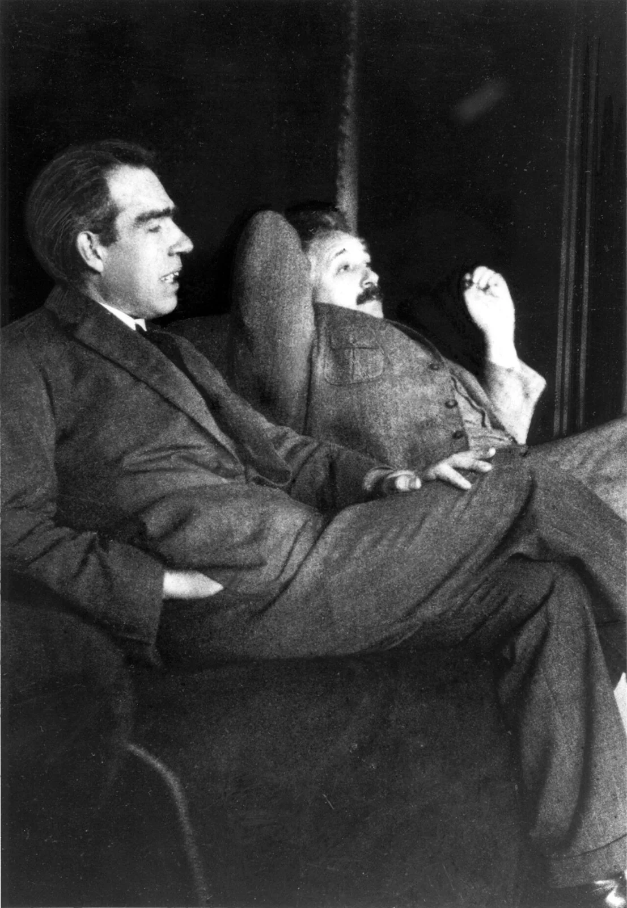
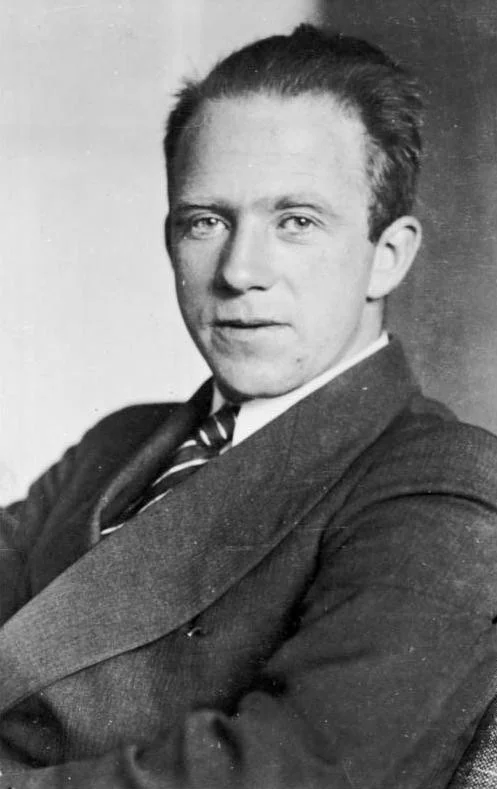
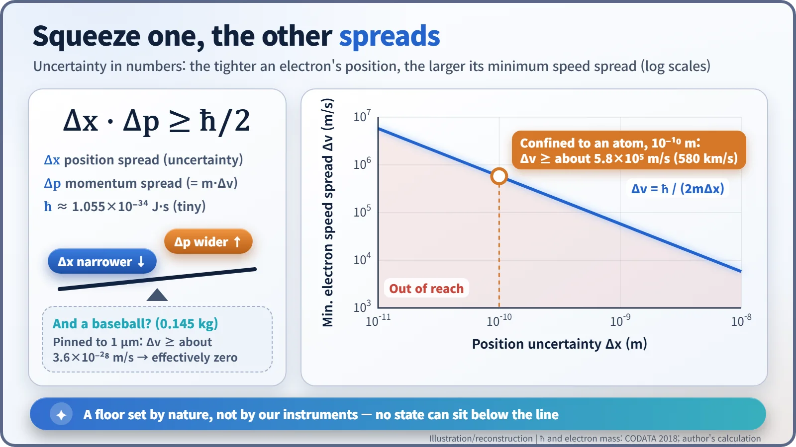
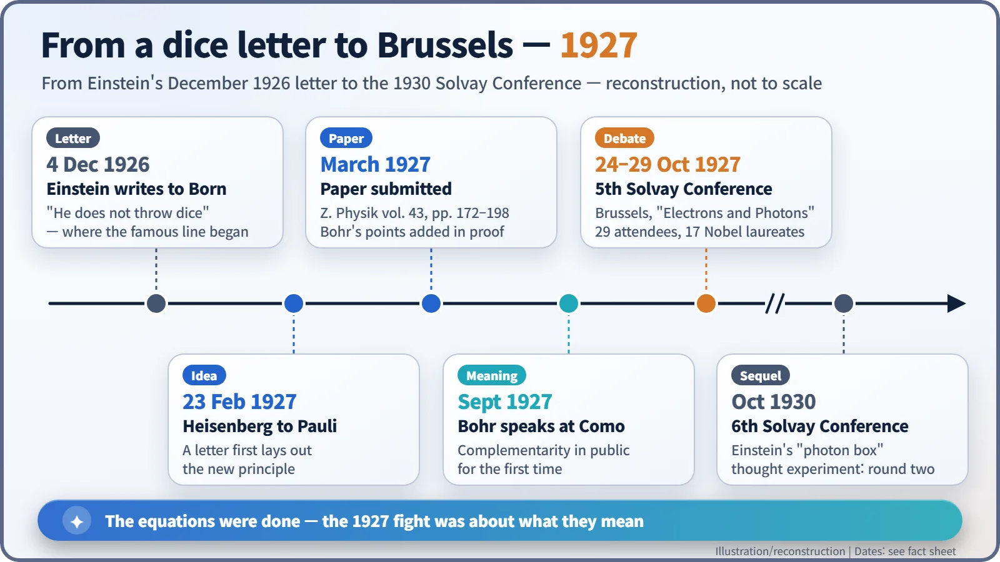

Nuclear History · 038
Does God Play Dice? Where Einstein's Line Really Came From — the Uncertainty Principle and the 1927 Solvay Conference
Einstein's dice line began in a 1926 letter; in 1927 Heisenberg's uncertainty principle and the Solvay Conference turned it into the great debate over what quantum mechanics means.
The famous line "God does not play dice" did not start at the 1927 Solvay Conference: it comes from a letter Einstein wrote to Max Born on 4 December 1926. In February–March 1927 Werner Heisenberg formulated the uncertainty principle, and in October 1927 the Fifth Solvay Conference in Brussels became the stage for the great Bohr–Einstein debate over what quantum mechanics really means.
A letter, not a speech
"God does not play dice." Of all the lines attributed to Albert Einstein, this may be the most quoted, and it is often placed in Brussels in October 1927, thrown across the table at Niels Bohr during the Solvay Conference. The real story starts almost a year earlier, in a private letter, and the wording was not quite what we remember.
On 4 December 1926, Albert Einstein (1879–1955) wrote to his friend Max Born (1882–1970). In Irene Born's English translation of the German original: "Quantum mechanics is certainly imposing. But an inner voice tells me that it is not yet the real thing. The theory says a lot, but does not really bring us any closer to the secret of the 'old one.' I, at any rate, am convinced that He does not throw dice." [4]
The German reads "Jedenfalls bin ich überzeugt, daß der nicht würfelt." The "He" refers back to der Alte, "the Old One", Einstein's playful name for whatever lies behind the laws of nature. "God does not play dice" is a tidied-up version of that sentence, and Einstein returned to the idea in several forms later in life. There is no single fixed "quote".

The maths was done; the meaning was not
By late 1926 the mathematics of quantum mechanics was largely in place. Werner Heisenberg's matrix mechanics and Erwin Schrödinger's wave mechanics had both appeared in 1925–26, and Born had proposed reading Schrödinger's wave function as a measure of probability. That was exactly what bothered Einstein: a theory in which nature, at bottom, speaks only in odds.
The question was no longer how to calculate. It was what the calculations meant. What, physically, is going on inside an atom?
A winter in Copenhagen
Part of the answer came from Copenhagen. In February 1927 Niels Bohr (1885–1962) went off on a skiing holiday in Norway, and his young colleague Werner Heisenberg (1901–1976) pushed his own ideas forward alone. On 23 February 1927 he set them out in a long letter to his friend Wolfgang Pauli (1900–1958) in Hamburg. [3]
Heisenberg's thought experiment was a "gamma-ray microscope". To see exactly where an electron is, you need light of very short wavelength. But such light carries a lot of energy and kicks the electron hard. The sharper you make its position, the more blurred its momentum becomes. His paper, "On the perceptual content of quantum-theoretical kinematics and mechanics" (an English rendering of the German title), went to the Zeitschrift für Physik in March and appeared in volume 43, pages 172–198. [1] [2]

When Bohr returned and read the manuscript, he objected to the emphasis. The deep point, he argued, was not that light "disturbs" the electron. It was that position and momentum cannot both be sharply defined in the same experimental arrangement, and that both the particle picture and the wave picture are needed. Heisenberg added Bohr's comments to the paper as an "addition in proof". [2]
Not a problem of clumsy instruments
The textbook form today is Δx · Δp ≥ ħ/2, derived rigorously later in 1927 by the American physicist Earle Hesse Kennard. Δx is the spread in position, Δp the spread in momentum, and ħ ("h-bar") is a tiny constant, about 1.055 × 10−34 joule-seconds. [2] [3]

Put numbers in and it comes alive. Confine an electron to the size of an atom, about 10−10 m, and the spread in its speed must be at least about 5.8 × 105 m/s, or roughly 580 km per second. Pin down a 0.145 kg baseball to within a micrometre and the minimum speed spread is about 3.6 × 10−28 m/s, which is zero for every practical purpose. That is why we never notice the principle in daily life.
A common misunderstanding is that better equipment will one day beat it. It will not. The relation describes quantum states themselves: no state can have both a narrow position spread and a narrow momentum spread. Heisenberg himself preferred phrases such as "inaccuracy relations" or "indeterminacy relations"; the English name "uncertainty principle" stuck later. [2]
Breakfast debates in Brussels
In September 1927, at a physics congress in Como, Italy, marking the centenary of Alessandro Volta's death, Bohr presented complementarity in public for the first time: particle and wave descriptions exclude each other, yet both are needed for the full picture. [3]
Then, from 24 to 29 October 1927, the Fifth Solvay Conference met at the Solvay Institute in Leopold Park, Brussels. Its theme was "Electrons and Photons", and it was chaired by Hendrik Lorentz (1853–1928). Of the 29 people in the official group portrait, 17 had received or would later receive a Nobel Prize, Marie Curie among them as the only person to win in two different sciences. [6]

According to a story often told by the participants, the real contest happened outside the sessions. Einstein would bring a new thought experiment to breakfast, designed to beat the uncertainty relations; Bohr and his colleagues would puzzle over it all day and present a rebuttal by dinner. Looking back in 1949, Bohr wrote that when Einstein mockingly asked whether God plays dice, he replied by pointing to the great caution, already urged by ancient thinkers, needed in ascribing attributes to Providence in everyday language. The snappier retort often quoted, "Einstein, stop telling God what to do", circulates in several versions and has no firm source. [5]
Who won?
The argument continued at the sixth Solvay Conference in October 1930, with Einstein's famous "photon box" thought experiment, and Einstein never accepted that quantum mechanics was a complete theory. Heisenberg, for his part, judged that the 1927 meeting "has contributed extraordinarily to the clarification of the physical foundations of the quantum theory." [6]
For nuclear energy this was not an abstract quarrel. Quantum mechanics soon became the tool that cracked puzzles of the atomic nucleus, such as alpha decay. And today's reactor designers still treat neutrons not as particles on fixed tracks but statistically, through probabilities and Monte Carlo calculations, a way of thinking that sits comfortably with the probabilistic language of 1927. Einstein disliked the dice, but his relentless objections helped make the rules of the game far more solid.